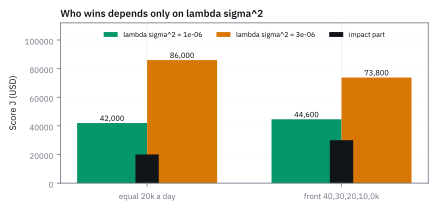
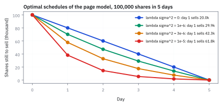
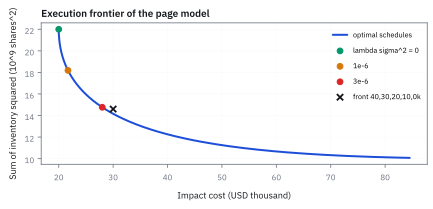

18.6 Almgren-Chriss Optimal Execution
ขายก้อนใหญ่เร็วเสีย impact ขายช้าเสี่ยงราคาวิ่งหนี Almgren กับ Chriss เขียนสองอย่างนี้ในคะแนนเดียว แล้วแผนที่ดีที่สุดออกมาเป็นเส้นโค้ง sinh ที่ขึ้นกับความกลัวความเสี่ยงที่เราเลือกเอง
ต้องขายหุ้น 100,000 หุ้นให้หมดใน 5 วัน impact ชั่วคราวทำให้เสีย $\eta=\$0.00001$ ต่อหุ้นกำลังสอง (ขายวันละ $v$ หุ้นเสีย $\eta v^2$ ดอลลาร์) ความเสี่ยงของหุ้นที่ถือค้างคิดเป็น $c=\lambda\sigma^2$ ต่อหุ้นกำลังสองต่อวัน เทรดเดอร์คนหนึ่งเสนอขายเท่ากันวันละ 20,000 อีกคนเสนอเร่งขาย 40, 30, 20, 10, 0 พันหุ้น ถ้า $c=0.000001$ ใครชนะ และถ้า $c=0.000003$ ล่ะ?
ลองตอบก่อนเปิดเฉลย
ที่ $c=0.000001$ แบบเท่ากันชนะ คะแนน \$42,000 ต่อ \$44,600 ที่ $c=0.000003$ แบบเร่งชนะ \$73,800 ต่อ \$86,000 ตลาดไม่ได้เปลี่ยนอะไรเลย มีแค่ความกลัวที่เราเขียนลงไป และทั้งสองแบบยังแพ้แผนที่ดีที่สุดของแบบจำลอง ซึ่งได้ \$39,885 และ \$72,299
สิ่งที่เราจะสร้าง
18.5 แสดงว่าคำสั่งใหญ่ดันราคาตัวเอง และทางแก้คือแบ่งส่ง แต่แบ่งนานก็ถือความเสี่ยงนาน หน้านี้ตั้งปัญหาให้ชั่งกันได้แบบ mean-variance ของ 17.3: ต้นทุนที่คาดว่าจะเสีย บวกความกลัวคูณความแปรปรวนของเงินที่จะได้
ลำดับคือ ทำบัญชีเงินที่ได้จากการขายตามแบบจำลองราคาของคอร์ส ให้เห็นว่าความเสี่ยงมาจากหุ้นที่ถือค้าง แสดงว่า impact ถาวรแบบเส้นตรงไม่เปลี่ยนแผน พิสูจน์ว่าไม่กลัวความเสี่ยงก็ขายเท่ากัน ให้คะแนนสองแผนด้วยมือ หาแผนที่ดีที่สุดจากเงื่อนไขอันดับหนึ่ง (12.2) ได้สูตรปิดแบบ sinh ดู execution frontier ใส่เพดานปริมาณของโต๊ะ แล้วแก้ไฟล์ของคอร์สที่ใช้ impact แบบ Kissel–Glantz
ศัพท์ที่ใช้ในหัวข้อนี้
- Optimal execution
- การเลือกว่าจะซื้อหรือขายวันละเท่าไร ให้ต้นทุนที่คาดบวกความเสี่ยงต่ำที่สุด ใช้เปลี่ยนเป้าหมายของโต๊ะให้เป็นกฎส่งคำสั่งที่ตรวจได้
- Temporary และ permanent impact
- temporary คือราคาที่เสียเฉพาะคำสั่งของช่วงนั้น แล้วราคาฟื้นกลับ permanent คือราคาที่ถูกกดลงถาวรและกระทบทุกหุ้นที่ขายหลังจากนั้น
- Inventory risk
- ความเสี่ยงของหุ้นที่ยังขายไม่หมด ถ้าราคาวิ่งหนีระหว่างรอ หุ้นที่เหลือจะขายได้ราคาต่ำลง ยิ่งถือมากและนานยิ่งเสี่ยงมาก
- Risk aversion ($\lambda$)
- ตัวเลขที่เราเลือกเองว่ายอมจ่ายเท่าไรเพื่อลดความแปรปรวนหนึ่งหน่วย ตลาดไม่ได้กำหนด แต่เป็นตัวตัดสินว่าแผนจะเร่งขายแค่ไหน
- Execution frontier
- เส้นของแผนที่ดีที่สุดเมื่อความกลัวเปลี่ยนไปทีละค่า แผนใดที่อยู่นอกเส้นคือมีแผนอื่นที่เสี่ยงเท่ากันแต่ถูกกว่า
สัญลักษณ์และหน่วย
| สัญลักษณ์ | ความหมาย | หน่วย |
|---|---|---|
| $X,\ T$ | จำนวนหุ้นที่ต้องขาย และจำนวนช่วง | หุ้น, ช่วง |
| $n_k$ หรือ $v_t$ | หุ้นที่ขายในช่วงที่ $k$ | หุ้น |
| $x_k$ | หุ้นที่ยังถือหลังการขายครั้งที่ $k$ ($x_0=X$, $x_T=0$) | หุ้น |
| $S_k,\ \hat S_k$ | ราคาก่อนขายครั้งที่ $k$ และราคาที่ได้จริง | \$ ต่อหุ้น |
| $\eta,\ \gamma$ | ตัวคูณ impact ชั่วคราวและถาวร | \$ ต่อหุ้นกำลังสอง |
| $\sigma,\ \lambda,\ c$ | ความผันผวนของราคาต่อช่วง ความกลัวความเสี่ยง และ $c=\lambda\sigma^2$ | \$ ต่อหุ้น, ต่อ \$, \$ ต่อหุ้นกำลังสอง |
ขั้นที่ 1 — บัญชีเงินที่ได้จากการขาย: ความเสี่ยงมาจากหุ้นที่ถือค้าง
คอร์สใช้แบบจำลองราคานี้: ขาย $n_k$ หุ้นได้ราคา $\hat S_k$ ต่ำกว่าราคาตลาด $S_k$ อยู่ $h(n_k)$ (ชั่วคราว) หลังขาย ราคาตลาดเดินสุ่ม $\sigma z_k$ ($z_k$ เป็น Normal มาตรฐานอิสระกัน) และถูกกดถาวร $g(n_k)$ รวมเงินที่ได้ทุกครั้งแล้วจัดใหม่ให้เห็นว่าอะไรคูณกับอะไร
แทน $S_k=S_1+\sum_{j\lt k}(\sigma z_j-g(n_j))$ แล้วคูณ $n_k$ บวกทุก $k$ กลที่ต้องใช้คือสลับลำดับผลบวก: $z_j$ กระทบทุกหุ้นที่ขายหลังครั้งที่ $j$ และหุ้นเหล่านั้นรวมกันคือ $x_j$ หุ้นที่ยังถือหลังครั้งที่ $j$ พอดี ก้อน $g$ สลับแบบเดียวกัน
ผล: เงินที่หายไปจากมูลค่าเริ่มต้น $S_1X$ โดยเฉลี่ยคือ $C(n)$ และความแปรปรวนของเงินที่ได้มาจากหุ้นที่ถือค้างเท่านั้น ขายเร็ว $x_k$ เล็ก เสี่ยงน้อยแต่ $h$ ใหญ่ ขายช้าตรงข้าม
ขั้นที่ 2 — impact ถาวรแบบเส้นตรงไม่เปลี่ยนแผน และคะแนนที่ใช้ทั้งหน้า
ถ้า $h(n)=\eta n$ และ $g(n)=\gamma n$ ต้นทุนถาวร $\gamma\sum n_kx_k$ ดูเหมือนขึ้นกับแผน แต่ผลรวมนี้เขียนได้ด้วยผลรวมกำลังสองอย่างเดียว เพราะ $X^2=(\sum n_k)^2=\sum n_k^2+2\sum_{k\lt j}n_kn_j$ และ $\sum_k n_kx_k=\sum_{k\lt j}n_kn_j$
impact ถาวรแบบเส้นตรงเพิ่มค่าคงที่ $\tfrac12\gamma X^2$ ที่ทุกแผนจ่ายเท่ากัน และลด $\eta$ ลงนิดหน่อย จึงไม่เปลี่ยนว่าแผนไหนดีกว่า ส่วนที่เหลือของหน้าจึงตัด $\gamma$ ออก
แถวสุดท้ายคือนิยามคะแนนที่หน้านี้ใช้ ไม่ใช่ผลที่พิสูจน์: ต้นทุน impact บวก $c=\lambda\sigma^2$ คูณผลรวมกำลังสองของหุ้นที่ถือเข้าไปในแต่ละวัน ($x_0=X$ ถึง $x_{T-1}$) ทั้งสองก้อนเป็นดอลลาร์ ก้อน $x_0^2$ เป็นค่าคงที่ที่ทุกแผนจ่ายเท่ากัน
ขั้นที่ 3 — ถ้าไม่กลัวความเสี่ยงเลย ขายเท่ากันทุกวัน
ดูกรณีสุดขั้วก่อน $c=0$ เหลือแค่ $\eta\sum v_t^2$ ภายใต้ $\sum v_t=X$ เขียนแต่ละวันเป็นค่าเฉลี่ยบวกส่วนเบี่ยง $v_t=X/T+d_t$ ซึ่ง $\sum d_t=0$ เพราะยอดรวมต้องเป็น $X$
ก้อน $\sum d_t^2$ ไม่ติดลบ และเป็นศูนย์เฉพาะเมื่อทุกวันขายเท่ากัน ต้นทุน impact ต่ำสุดจึงเป็นการขายวันละ 20,000 เสีย \$20,000 ทุกความเบี่ยงเบนจากค่าเฉลี่ยทำให้แพงขึ้นเพราะ impact เป็นกำลังสอง
ขั้นที่ 4 — ให้คะแนนสองแผนด้วยมือ
โจทย์ให้อะไรมาบ้าง: แผนเท่ากัน (eq) ขายวันละ 20,000 ถือเข้าไปในแต่ละวัน 100, 80, 60, 40, 20 พันหุ้น แผนเร่ง (fr) ขาย 40, 30, 20, 10, 0 พันหุ้น ถือเข้าไป 100, 60, 30, 10, 0 พันหุ้น $\eta=10^{-5}$
คำตอบ: $J=I+cS$ ที่ $c=10^{-6}$: แผนเท่ากัน $20{,}000+22{,}000=\$42{,}000$ แผนเร่ง $30{,}000+14{,}600=\$44{,}600$ แผนเท่ากันชนะ ที่ $c=3\times10^{-6}$: แผนเท่ากัน $20{,}000+66{,}000=\$86{,}000$ แผนเร่ง $30{,}000+43{,}800=\$73{,}800$ แผนเร่งชนะ
ตรวจเองใน 10 วินาที: แผนเร่งจ่าย impact มากกว่า \$10,000 แต่ลด $S$ ลง $7{,}400\times10^6$ แผนเร่งคุ้มเมื่อ $c\times7.4\times10^9\gt10{,}000$ คือ $c\gt1.35\times10^{-6}$ ซึ่งอยู่ระหว่างสองค่าที่ลอง
Figure 18.6a — ผู้ชนะขึ้นกับความกลัวความเสี่ยงล้วน ๆ

สองกลุ่มคือแผนเท่ากัน (equal 20k a day) และแผนเร่ง (front 40, 30, 20, 10, 0k) แท่งเขียวคือคะแนนที่ $c=10^{-6}$ (42,000 และ 44,600) แท่งส้มคือที่ $c=3\times10^{-6}$ (86,000 และ 73,800) แท่งดำแคบตรงกลางคือส่วน impact 20,000 และ 30,000 ซึ่งไม่ขึ้นกับ $c$
ขั้นที่ 5 — แผนที่ดีที่สุดจากเงื่อนไขอันดับหนึ่ง: สูตรปิดแบบ sinh
แทนที่จะลองทีละแผน ให้ตัวแปรเป็นหุ้นที่ถือ $x_1,\dots,x_{T-1}$ (เพราะ $v_k=x_{k-1}-x_k$) แล้วตั้งอนุพันธ์ของ $J$ เทียบแต่ละ $x_k$ เป็นศูนย์ตาม 12.2 $x_k$ ปรากฏในสองวันของ impact และหนึ่งพจน์ของความเสี่ยง
หารด้วย $2\eta$ แล้วย้ายข้าง ได้สมการผลต่างที่บอกว่า “ความโค้ง” $x_{k+1}-2x_k+x_{k-1}$ เท่ากับ $\kappa^2x_k$ ลองคำตอบรูป $x_k=e^{\tilde\kappa k}$ แทนลงไปแล้วหารด้วย $e^{\tilde\kappa k}$ ได้ $e^{\tilde\kappa}+e^{-\tilde\kappa}=2\cosh\tilde\kappa=2+\kappa^2$ คำตอบทั่วไปคือผลรวมของ $e^{\tilde\kappa k}$ กับ $e^{-\tilde\kappa k}$ แล้วเลือกสัมประสิทธิ์ให้ $x_0=X$ และ $x_T=0$ ได้รูป sinh ในแถวสุดท้าย
ถ้า $c\to0$ จะได้ $\tilde\kappa\to0$ และ $\sinh(\tilde\kappa(T-k))/\sinh(\tilde\kappa T)\to(T-k)/T$ คือเส้นตรง ขายเท่ากันตามขั้นที่ 3 ในเวลาต่อเนื่องสมการกลายเป็น $x''=\kappa^2x$ ซึ่งเป็นสิ่งที่ Almgren กับ Chriss เขียนไว้
ขั้นที่ 6 — แผนที่ดีที่สุดของโจทย์เปิดหน้า
โจทย์ให้อะไรมาบ้าง: $X=100{,}000$, $T=5$, $\eta=10^{-5}$ และ $c=10^{-6}$ จึงได้ $\kappa^2=0.1$
คำตอบ: แผนที่ดีที่สุดเร่งขายวันแรกเกือบ 30,000 แล้วลดลงทุกวัน คะแนน \$39,884.60 ดีกว่าทั้งสองแผนของขั้นที่ 4 ที่ $c=3\times10^{-6}$ วันแรกขาย 42,298.75 คะแนน \$72,298.75 และที่ $c=10^{-5}$ วันแรกขาย 61,818.18
ตรวจเองใน 10 วินาที: ห้าวันรวมกันได้ 100,000 และตรวจแถวแรกของสมการผลต่าง: $x_2+x_0=47{,}242.35+100{,}000=2.1(70{,}115.40)=147{,}242.34$ ตรงกันในหลักที่ปัด
Figure 18.6b — แผนที่ดีที่สุดของแบบจำลองในหน้านี้

แกนนอนคือวันที่ 0 ถึง 5 แกนตั้งคือหุ้นที่ยังต้องขาย (พันหุ้น) สี่เส้นคือ $c=0$, $10^{-6}$, $3\times10^{-6}$ และ $10^{-5}$ ได้จากการแก้เงื่อนไขอันดับหนึ่งของขั้นที่ 5 ตรง ๆ ป้ายบอกวันแรกขาย 20.0, 29.9, 42.3 และ 61.8 พันหุ้น เส้น $c=0$ เป็นเส้นตรง ยิ่งกลัวมากเส้นยิ่งโค้งลงเร็วในช่วงต้น
ขั้นที่ 7 — execution frontier: แผนเร่งด้วยมือเป็นแผนที่เปลือง
เมื่อ $c$ เปลี่ยนทีละค่า แผนที่ดีที่สุดแต่ละแผนให้จุดหนึ่งบนระนาบ (ต้นทุน impact, ผลรวมกำลังสองของหุ้นที่ถือ) จุดเหล่านี้คือ frontier เหมือนเส้นของ Markowitz ใน 17.3 ถามว่าแผนเร่ง 40, 30, 20, 10, 0 อยู่บนเส้นไหม: หาแผนที่ดีที่สุดที่ความเสี่ยงเท่ากัน ($S=14{,}600\times10^6$) ด้วยการแบ่งครึ่งช่วงบน $c$
ที่ความเสี่ยงเท่ากันทุกหลัก แผนที่ดีที่สุดจ่าย impact น้อยกว่าแผนเร่งด้วยมือ \$1,488.06 แผนเร่งด้วยมือจึงอยู่ขวาของ frontier ไม่มีค่า $c$ ใดที่ทำให้มันดีที่สุด สาเหตุคือแผนนั้นขายวันสุดท้ายเป็นศูนย์และลดลงเป็นเส้นตรง ขณะที่แผนที่ดีที่สุดกระจายหางยาวกว่า
Figure 18.6c — execution frontier ของแบบจำลองในหน้านี้

แต่ละจุดบนเส้นคือแผนที่ดีที่สุดของ $c$ ค่าหนึ่ง (ศูนย์ และ 200 ค่าแบบ log จาก $10^{-8}$ ถึง $10^{-4}$) แกนนอนคือต้นทุน impact (พันดอลลาร์) แกนตั้งคือผลรวมกำลังสองของหุ้นที่ถือ ($10^9$ หุ้นกำลังสอง) จุดสีคือ $c=0$, $10^{-6}$ และ $3\times10^{-6}$ กากบาทคือแผนเร่ง (30, 14.6) ซึ่งอยู่ขวาของเส้น ตรงกับขั้นที่ 7
ขั้นที่ 8 — แผนสวยแต่ส่งจริงได้ไหม: เพดานปริมาณของโต๊ะ
โจทย์ให้อะไรมาบ้าง: โต๊ะห้ามขายเกิน 15% ของปริมาณซื้อขายของวัน หุ้นนี้ซื้อขายวันละ 200,000 หุ้น จึงขายได้ไม่เกินวันละ 30,000 ใช้ $c=3\times10^{-6}$ แผนที่ดีที่สุดของขั้นที่ 6 ขายวันแรก 42,299 เกินเพดาน
คำตอบ: ถ้าแค่ตัดวันแรกเหลือ 30,000 แล้วคิดสี่วันที่เหลือใหม่ วันที่สองจะเป็น 30,315 ซึ่งเกินเพดานอีก จึงต้องให้เพดานบังคับทั้งวันแรกและวันที่สอง แล้วคิดสามวันที่เหลือด้วยสูตรเดิมจาก 40,000 หุ้น เพดานทำให้คะแนนแย่ลง \$2,623.16 ซึ่งเป็นราคาของการเคารพกฎ
ตรวจเองใน 10 วินาที: ห้าวันรวมกันได้ $30{,}000+30{,}000+18{,}555+12{,}121+9{,}324=100{,}000$ และไม่มีวันไหนเกิน 30,000
ขั้นที่ 9 — ไฟล์ของคอร์ส: ขาย 1,000 หุ้นใน 10 ช่วงด้วย impact แบบ Kissel–Glantz
โจทย์ให้อะไรมาบ้าง: คอร์สใช้ impact ถาวรเส้นตรง $g(n)=0.001n$ และ impact ชั่วคราวแบบ Kissel–Glantz ของ 18.5 $h(n)n=\alpha n+\delta n^{1.65}$ กับหุ้นตัวที่ 1 ของไฟล์ (ความผันผวนต่อช่วง 0.051449 ปริมาณต่อวัน 10) น้ำหนักความเสี่ยง $\rho=1$ แล้วให้ Solver หาจำนวนขายทั้ง 10 ช่วง
คำตอบ: คำตอบของไฟล์ขายช่วงแรก 849.84 หุ้น (85%) ช่วงที่สอง 104.60 แล้วเหลือแค่เศษ ต้นทุนชั่วคราว 1,120.73 ถาวร 132.93 ความเสี่ยง 66.10 ขายเท่ากันช่วงละ 100 หุ้นเสียชั่วคราวน้อยกว่ามาก แต่ความเสี่ยง 7,543.95 ทำให้คะแนนแย่กว่าหกเท่า เราแก้ซ้ำด้วยการย้ายหุ้นทีละคู่ช่วงจากจุดเริ่มแบบเท่ากัน ได้ 1,319.71 ช่วงแรก 850.42 หุ้น ไฟล์นี้จึงหาคำตอบได้ใกล้จุดต่ำสุดจริง
ตรวจเองใน 10 วินาที: แบบเท่ากัน ต้นทุนถาวรคือ $0.001(100)(900+800+\dots+0)=0.1(4{,}500)=450$ และความเสี่ยงคือ $0.051449^2(900^2+\dots+100^2)=0.002647(2{,}850{,}000)$
Figure 18.6d — แผนจากไฟล์ของคอร์ส

แท่งน้ำเงินคือหุ้นที่ขายในแต่ละช่วงจากไฟล์: 849.84, 104.60, 29.94, 7.41, 3.55 แล้วต่ำกว่า 2 หุ้น เส้นแดงคือหุ้นที่ยังถือ จาก 1,000 ลงถึงศูนย์ ป้ายชี้ว่าช่วงแรกขาย 85% ในไฟล์นี้ความเสี่ยงของการถือค้างหนักกว่าต้นทุนการขายเร็วมาก
คำถามที่ควรถามออกมาดัง ๆ
$\lambda$ เอามาจากไหน? จากเรา ไม่ใช่จากตลาด โต๊ะมักเลือกให้แผนที่ได้ตรงกับความเร่งด่วนของลูกค้า แล้วบันทึกไว้ว่าเลือกเพราะอะไร ขั้นที่ 4 แสดงว่าค่านี้ค่าเดียวพลิกคำตอบได้
ย้ายทั้งพอร์ตยากกว่าหุ้นตัวเดียวอย่างไร? คอร์สชี้ห้าเรื่อง: จำนวนช่วง $T$ เป็นตัวแปร ผลกระทบข้ามหุ้น การเลือก market หรือ limit order การใช้ dark pool และการรักษาพอร์ตให้สมดุลระหว่างทาง เช่นขายฝั่งถือไปพร้อมกับปิดฝั่งชอร์ต ไม่ให้พอร์ตที่ทำไปครึ่งเดียวกลายเป็นเดิมพันด้านเดียว คอร์สยอมรับว่าเรื่องเหล่านี้ยังเข้าใจไม่ครบ
ทำไมหุ้นตัวหนึ่งกระทบอีกตัวได้? ผู้ตั้งราคาเรียนรู้มูลค่าของหุ้นตัวหนึ่งจากคำสั่งในหุ้นที่เกี่ยวข้อง คอร์สสรุปลักษณะที่พบว่าผลข้ามหุ้นมักติดลบ เล็กลงเมื่อมีผู้เก็งกำไรมาก และใหญ่ขึ้นเมื่อความเห็นในตลาดกระจายมาก
ความผิดที่ให้คำตอบผิดแบบเงียบ ๆ
เทียบคะแนนข้ามค่า $c$: 42,000 กับ 73,800 เป็นคะแนนคนละเกณฑ์ เทียบกันไม่ได้ ต้องเทียบแผนภายใต้ $c$ เดียวกัน
ส่งแผนที่ดีที่สุดโดยไม่ตรวจเพดาน: ขั้นที่ 8 วันแรก 42,299 เกินเพดาน 30,000 และการแก้แค่วันแรกทำให้วันที่สองเกินต่อ
ใช้หน่วยของ $c$ ผิด: $\sigma$ ต้องเป็นดอลลาร์ต่อหุ้นต่อช่วงเดียวกับ $v$ ถ้าใส่ $\sigma$ รายปีแทนรายวัน $c$ ใหญ่ขึ้น 252 เท่า แผนจะขายเกือบหมดในวันแรก
อ่านคะแนนเป็นสัญญาว่าจะได้ราคานี้: แบบจำลองใช้พารามิเตอร์คงที่ ข่าว การหยุดซื้อขาย และปริมาณที่หายไปทำให้ต้องมีกฎตรวจและปรับแผนระหว่างทาง
ใช้ทำอะไรบนโต๊ะจริง
ระบบส่งคำสั่งของกองทุนใหญ่ใช้กรอบนี้กำหนดว่าจะขายก้อนใหญ่ให้เสร็จภายในกี่ชั่วโมงหรือกี่วัน โดยตั้ง $\lambda$ ตามความเร่งด่วน ใส่เพดานสัดส่วนของปริมาณ ช่วงประมูล และช่วงห้ามซื้อขายเป็นข้อจำกัดก่อนหาคำตอบ แล้วใช้ต้นทุนที่แบบจำลองคาดเป็นเกณฑ์วัดคุณภาพการส่งคำสั่งย้อนหลัง
สามโจทย์ตรวจความเข้าใจ
1. ขาย 60,000 หุ้นใน 3 วัน $\eta=10^{-5}$ และไม่กลัวความเสี่ยง ($c=0$) ควรขายอย่างไร และเสีย impact เท่าไร?
เฉลย
ขั้นที่ 3 บอกว่าขายเท่ากันวันละ 20,000 เสีย $3(10^{-5})(20{,}000)^2=\$12{,}000$ แผนอื่นทุกแผนเสียมากกว่านี้ $\eta\sum d_t^2$
2. ถ้า $\eta$ และ $c$ ของโจทย์เปิดหน้าเพิ่มเป็นสองเท่าทั้งคู่ ($2\times10^{-5}$ และ $2\times10^{-6}$) แผนที่ดีที่สุดและคะแนนเปลี่ยนอย่างไร?
เฉลย
แผนขึ้นกับ $\kappa^2=c/\eta=0.1$ เท่านั้น จึงเหมือนเดิมทุกหุ้น (วันแรก 29,884.60) ส่วนคะแนนเป็นสองเท่า $2(39{,}884.60)=\$79{,}769.19$
3. ใส่ impact ถาวร $\gamma=10^{-6}$ ต่อหุ้นกำลังสองให้แผนเท่ากันและแผนเร่งของขั้นที่ 4 ต้นทุนถาวรเป็นเท่าไร?
เฉลย
ใช้ขั้นที่ 2: $\tfrac12\gamma(X^2-\sum v^2)$ แผนเท่ากัน $0.5(10^{-6})(10^{10}-2\times10^9)=\$4{,}000$ แผนเร่ง $0.5(10^{-6})(10^{10}-3\times10^9)=\$3{,}500$ ต่างกัน \$500 ซึ่งคือ $\tfrac12\gamma$ คูณผลต่างของ $\sum v^2$ พอดี จึงรวมเข้ากับ $\eta$ ได้ตามขั้นที่ 2
คำนวณซ้ำด้วย JavaScript
โค้ดนี้ให้คะแนนแผนใด ๆ หาแผนที่ดีที่สุดด้วยการแก้ระบบสามแนวทแยง (Thomas algorithm) และด้วยสูตร sinh หาแผนบน frontier ที่ความเสี่ยงเท่าแผนเร่ง คิดแผนที่มีเพดาน คิดตัวเลขของไฟล์คอร์สและแก้โจทย์ไฟล์ซ้ำด้วยการย้ายหุ้นทีละคู่ช่วง แล้วพิมพ์ตัวเลขหลักหนึ่งบรรทัด
const {sinh, acosh, abs, pow, sqrt} = Math;
// Score of a sell schedule v (shares per day): temporary impact eta v^2 plus c times the squared holdings
// carried into each day (x_0 = X, ..., x_{T-1}); c = lambda sigma^2.
function score(v, eta, c) {
if (!Array.isArray(v) || v.length === 0) throw new TypeError('schedule must be a non-empty array');
const X = v.reduce((a, b) => a + b, 0);
let held = X, impact = 0, risk = 0;
for (const n of v) { impact += eta * n * n; risk += held * held; held -= n; }
return {impact, risk, J: impact + c * risk};
}
// Optimal schedule from the first-order conditions: a tridiagonal system in x_1..x_{T-1}, solved by the Thomas algorithm.
function optimal(X, T, eta, c) {
if (!(eta > 0) || !(c >= 0)) throw new RangeError('eta must be positive and c must not be negative');
if (!Number.isInteger(T) || T < 2) throw new RangeError('T must be an integer of at least 2');
const m = T - 1, diag = Array(m).fill(2 * eta + c), rhs = Array(m).fill(0);
rhs[0] = eta * X;
const cp = [], dp = [];
for (let i = 0; i < m; i++) {
const denom = diag[i] - (i > 0 ? -eta * cp[i - 1] : 0);
cp.push(-eta / denom);
dp.push((rhs[i] - (i > 0 ? -eta * dp[i - 1] : 0)) / denom);
}
const x = Array(m);
for (let i = m - 1; i >= 0; i--) x[i] = dp[i] - (i < m - 1 ? cp[i] * x[i + 1] : 0);
const path = [X, ...x, 0];
return path.slice(1).map((h, i) => path[i] - h);
}
// The same schedule in closed form: x_k = X sinh(k~(T-k)) / sinh(k~ T) with cosh k~ = 1 + c/(2 eta).
function sinhPath(X, T, eta, c) {
const k = acosh(1 + c / (2 * eta));
return [...Array(T + 1)].map((_, t) => X * sinh(k * (T - t)) / sinh(k * T));
}
const X = 100000, eta = 1e-5;
const eq = [20000, 20000, 20000, 20000, 20000], fr = [40000, 30000, 20000, 10000, 0];
const best = [0, 1e-6, 3e-6, 1e-5].map(c => optimal(X, 5, eta, c));
// Optimal schedule with the same inventory risk as the front-loaded one: bisection on c.
let lo = 1e-9, hi = 1e-4;
for (let k = 0; k < 200; k++) { const m = Math.sqrt(lo * hi); if (score(optimal(X, 5, eta, m), eta, 0).risk > score(fr, eta, 0).risk) lo = m; else hi = m; }
const sameRisk = optimal(X, 5, eta, Math.sqrt(lo * hi));
// Desk cap: at most 15% of a 200,000-share day (30,000 shares). The cap binds on days 1 and 2; re-optimise days 3 to 5.
const capped = [30000, 30000, ...optimal(X - 60000, 3, eta, 3e-6)];
// Course workbook (trading.xlsx, sheet "execution"): sell 1,000 shares in 10 periods.
const sig = 0.051449003877626245, alpha = 0.3 * sig + 0.0015, delta = 0.0035 * pow(100 / 10, 0.65), gamma = 0.001, rho = 1;
function course(n) {
let x = 1000, temp = 0, perm = 0, risk = 0;
for (const k of n) { x -= k; temp += alpha * abs(k) + delta * pow(abs(k), 1.65); perm += gamma * k * x; risk += sig * sig * x * x; }
return {temp, perm, risk, J: temp + perm + rho * risk};
}
const file = [849.84241015001373, 104.60086279999477, 29.93624734270842, 7.4081776951493454, 3.5549452393038723,
1.5721227442371581, 0.77464941296237488, 0.94285956152714001, 0.69811723730202491, 0.66960455055810975];
// Re-solve the workbook problem: move shares between two periods at a time (golden-section line search).
function resolve(n) {
n = n.slice();
const g = (sqrt(5) - 1) / 2;
for (let sweep = 0; sweep < 400; sweep++) {
let gain = 0;
for (let i = 0; i < n.length; i++) for (let j = 0; j < n.length; j++) {
if (i === j || n[i] <= 0) continue;
const f = t => { const z = n.slice(); z[i] -= t; z[j] += t; return course(z).J; };
let a = 0, b = n[i], c1 = b - g * b, c2 = g * b, f1 = f(c1), f2 = f(c2);
for (let k = 0; k < 60; k++) {
if (f1 > f2) { a = c1; c1 = c2; f1 = f2; c2 = a + g * (b - a); f2 = f(c2); }
else { b = c2; c2 = c1; f2 = f1; c1 = b - g * (b - a); f1 = f(c1); }
}
const t = (a + b) / 2, before = course(n).J, after = f(t);
if (after < before - 1e-12) { n[i] -= t; n[j] += t; gain += before - after; }
}
if (gain < 1e-10) break;
}
return n;
}
const again = resolve(Array(10).fill(100));
console.log(JSON.stringify({
hand: {eq: [score(eq, eta, 1e-6), score(eq, eta, 3e-6)], fr: [score(fr, eta, 1e-6), score(fr, eta, 3e-6)]},
best: best.map((v, i) => ({day1: v[0], v, J: score(v, eta, [0, 1e-6, 3e-6, 1e-5][i]).J})),
sinh: [1e-6, 3e-6, 1e-5].map(c => sinhPath(X, 5, eta, c)), kappaTilde: acosh(1.05),
sameRisk: {v: sameRisk, impact: score(sameRisk, eta, 0).impact, risk: score(sameRisk, eta, 0).risk, c: Math.sqrt(lo * hi)},
capped: {v: capped, J: score(capped, eta, 3e-6).J},
permanent: {eq: 0.5 * 1e-6 * (X * X - eq.reduce((s, n) => s + n * n, 0)), fr: 0.5 * 1e-6 * (X * X - fr.reduce((s, n) => s + n * n, 0))},
course: {alpha, delta, file: course(file), equal: course(Array(10).fill(100)), again, againScore: course(again)},
exercises: {three: score([20000, 20000, 20000], eta, 0).impact, doubled: score(optimal(X, 5, 2e-5, 2e-6), 2e-5, 2e-6).J}
}));ที่มาที่ไป
Robert Almgren และ Neil Chriss ตีพิมพ์ “Optimal Execution of Portfolio Transactions” ในปี 2000 โดยยกแนวคิด mean-variance ของ Markowitz มาใช้กับการส่งคำสั่ง ได้ frontier ของแผนการขายแบบเดียวกับ frontier ของพอร์ต งานนี้เป็นฐานของระบบส่งคำสั่งอัตโนมัติแบบ implementation shortfall ที่ใช้กันทั่วอุตสาหกรรม และถูกขยายไปใช้กับ impact ที่ไม่เป็นเส้นตรงแบบในไฟล์ของคอร์ส
ข้อจำกัด: วิธีนี้สมมติอะไร และของจริงเป็นอย่างไร
| สมมติอะไร | ของจริง | ผลเวลาใช้งาน |
|---|---|---|
| impact เป็นเส้นตรงตามความเร็วขาย ด้วยพารามิเตอร์คงที่ | รูปไม่เป็นเส้นตรงและเปลี่ยนตามวัน | แผนไวต่อ $\eta$ ที่วัดยาก ต้องประมาณจากคำสั่งของตัวเอง |
| ราคาเดินสุ่มไม่มีทิศทาง | ข่าวระหว่างส่งคำสั่งสร้างทิศทางจริง | ต้องมีกฎตรวจและปรับแผนระหว่างวัน |
| ตลาดไม่รู้ว่าเรากำลังขาย | ระบบอื่นจับรูปแบบคำสั่งได้ | ระบบจริงสุ่มจังหวะและขนาดคำสั่งเพื่อไม่ให้ถูกจับทาง |
สิ่งที่ควรตอบได้หลังอ่าน
- ความเสี่ยงของการขายทยอยมาจากหุ้นที่ถือค้าง $\mathrm{Var}=\sigma^2\sum x_k^2$ และ impact ถาวรเส้นตรงไม่เปลี่ยนแผน
- ไม่กลัวความเสี่ยงก็ขายเท่ากัน (\$20,000) และความกลัวค่าเดียวพลิกผู้ชนะได้ (42,000 ต่อ 44,600 เทียบ 86,000 ต่อ 73,800)
- แผนที่ดีที่สุดคือ $x_k=X\sinh(\tilde\kappa(T-k))/\sinh(\tilde\kappa T)$ กับ $\cosh\tilde\kappa=1+c/(2\eta)$ วันแรกขาย 29,885 ที่ $c=10^{-6}$
- แผนเร่งด้วยมือเปลืองกว่าแผนบน frontier ที่ความเสี่ยงเท่ากัน \$1,488 และเพดาน 15% ของปริมาณทำให้คะแนนแย่ลง \$2,623
- ไฟล์ของคอร์สที่ใช้ impact แบบ Kissel–Glantz ขาย 85% ในช่วงแรก คะแนน 1,319.77 เทียบแบ่งเท่ากัน 8,322.82
18.7 ถามคำถามที่ใหญ่กว่า: ถ้า impact โตตามขนาด กลยุทธ์หนึ่งรับเงินได้มากที่สุดเท่าไรก่อนที่กำไรจะหายหมด